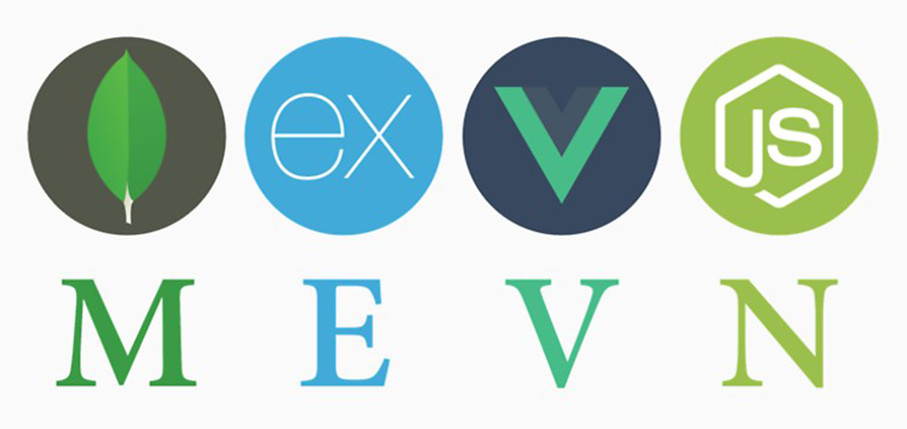

MEVN stack is a full-stack JavaScript solution that helps you build fast, robust and maintainable production level web applications.
This is where you can find all the info you need to setup your MEVN build environment.

Before you attempt any of the labs, Make sure you have the WebStorm IDE installed and configured. If you want to go 'old school' I'd recommend downloading and installing sublime text or Atom to use as your JS editor - you can use any text editor you like really, but I'll be using WebStorm for all the labs.
You can visit the live site at donationweb-vue.firebaseapp.com, to get an idea of what you COULD be developing, and here for what you'll ACTUALLY be developing in the labs donationweb-ssd.firebaseapp.com
The first thing to do is go to the official JetBrains resources and get yourself an educational licensed version of their WebStorm IDE.
You can find the download link here and the Student License application form here.
Don't forget to activate your subscription with your JetBrains account (and not an activation code or license server)

We'll look at the IDE (and its features) in detail as we work through the labs.

Instaling NodeJS is pretty much essential for any modern web development, so if you haven't got it installed already, you can install it (and the Node Package Manager npm) here.
There's also some useful info here - Installing Node.js and updating npm.
Before you install express, make sure you have node and npm installed already.
Go to the command line and type the following
npm install -g expressThat's it - you now have express installed! (globally (-g) )
It's probably worth installing the generator package as well
npm install -g express-generatorif you type
npm install -g express --savewithin your project folder, it will add express to your dependencies (but we'll cover that later on).
You can also use WebStorm to search for and add these dependencies to your project (like we did in the JS labs).
To install mongodb go to the official site and follow the instructions for your particular environment here.
We won't be using a mongodb database until later on in the module, but it's worth having it installed and setup before we actually need it.
You might also want to set up an mlabs account if you plan on deploying your project - here's the general set of screens you'll go through during the setup.


Visit the official Vue JS resources and set up your development environment as instructed.
You can find nearly everything you need here.
I'd also recommend installing SourceTree and setting up either a bitbucket (my personal favourite!) or GitHub account (if you haven't got one already) to manage versioning control of all your labs.
Once you have SourceTree installed, you can easily set up a local git repository and sync it up remotely with you bitbucket account as described here. It's probably best to set it up from the command line first and then just 'drag-n-drop' your folder onto the SourceTree app - and you're done!